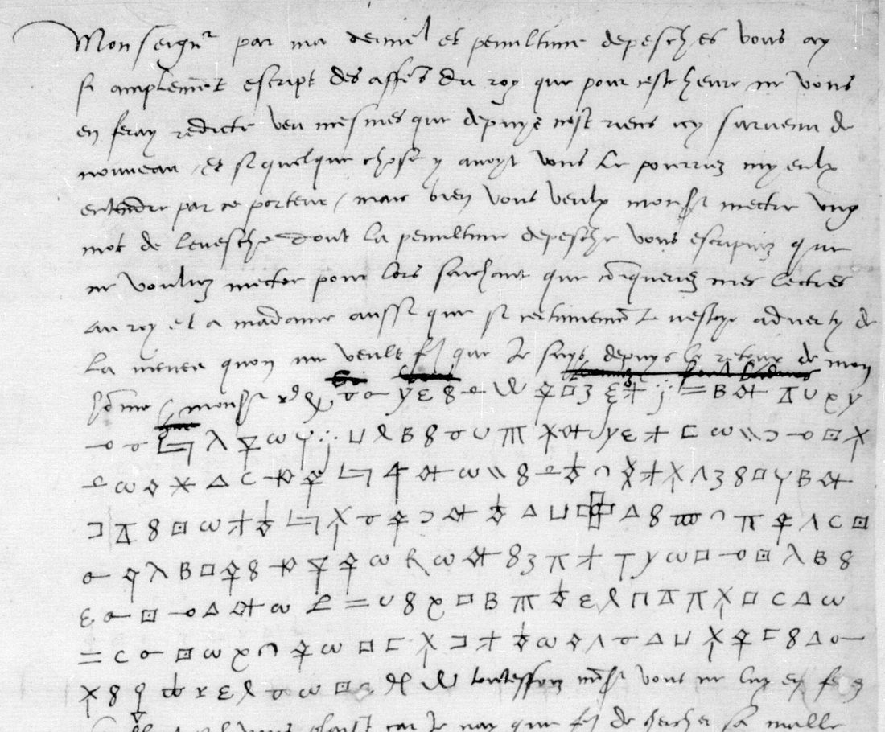
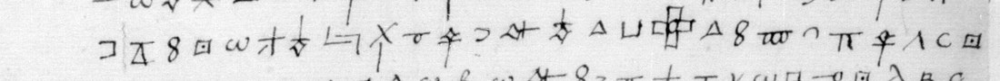

. Wikimedia Commons, public domain.")

At a glanceExisting decipherment · complete
- The letters
- Jean du Bellay, bishop of Bayonne and French ambassador in London, to Anne de Montmorency, grand master of France: four letters of 1529 with passages in cipher, and others of 1529 in the same cipher found in the sweep (16 June, 22 June, 30 June, 22 October). The item’s fifth letter, of 28 October 1528, is in another cipher.
- Where
- Bibliothèque nationale de France, fr. 3077 and fr. 3078 (catalogue item 4). The 16 June letter is fr. 3078 p. 21, DECODE R3688, catalogued there as not decrypted. The BnF notice gives day and month but no year.
- The cipher
- “Bayonne’s cipher” of 1529: an alphabet of drawn symbols with two to five signs for each letter, a few nulls, and single signs for words such as roy, madame, vous, faict.
- How it was done
- The letters were matched to their printed texts once their years were known. The key was re-derived from a sibling letter of 22 June 1529 that has the decipherer’s reading written over every sign. With it, lines 0–6 of the 16 June block were deciphered from the leaf before any printed text was found. Scheurer’s edition then supplied three word signs and the last line, and agrees word for word.
- What it says
- On the Cambrai peace talks of summer 1529: du Bellay advises that the powers for the treaty be dated
de ce temps là et du lieu ou sera le Roy
. - Still open
- Three isolated signs in the last cipher line. Whether the boxed cross is one word sign or two (madame Marguerite here, le Cardinal on 17 October). The 22 October opening: Scheurer’s text is seen only in Google Books snippets, and the reading made here from the leaf (fr. 3005 ff. 165r–166r, 23 October 2026) leaves stretches of f. 165v and f. 166r unread, so it counts as decoded, not read.
- Credit
- Rémy Scheurer, Correspondance du cardinal Jean du Bellay t. I (1969), prints both passages in clear: no. 12 p. 41 (16 June) and pp. 111–112 (22 October). The other letters are in Joachim Le Grand (1688). Satoshi Tomokiyo’s table of the cipher (Cryptiana) was the starting point for the key.
01 The letters of the item
Jean du Bellay was ambassador of François I in England from 1527 to 1529, in the years of Henry VIII’s divorce suit and Wolsey’s fall. His despatches to Montmorency are bound in BnF fr. 3077 and fr. 3078 by day and month, across several years. Omont’s inventory, followed by the BnF notice, gives only the day and month and calls the letters lettre chiffrée
or avec chiffre
. The catalogue took this to mean that no decipherment was known. Once each letter was dated from its content and matched to Le Grand’s Histoire du divorce (1688), Brewer’s Letters and Papers IV and Bourrilly’s edition of the first embassy (1905), all five turned out to be printed in clear. Four are of 1529, in the cipher of this page:
| Notice | Date | Leaf | Printed in clear | DECODE |
|---|---|---|---|---|
| fr. 3078 no. 5 | 15 June 1529 | pp. 31–33 | Le Grand III 323–326; L&P IV 5679 | R3690 |
| fr. 3077 no. 18 | 18 Sept 1529 | f. 113 | Le Grand III 354–359; L&P IV 5945 | R4252 |
| fr. 3077 no. 20 | 4 Oct 1529 | f. 125 | Le Grand III 359–363; L&P IV 5983 | R4253 |
| fr. 3078 no. 17 | 17 Oct 1529 | pp. 113–117 | Le Grand III 369–375 (from the deciphered copy, Clair. 330 f. 71); L&P IV 6011 | R3691 |
| fr. 3078 no. 19 | 27 Oct 1529 | pp. 133–134 | Le Grand III 379–381; L&P IV 6030 | R3692 |
The fifth, fr. 3077 no. 23 of 28 October 1528 (pp. 145–147, DECODE R4254), is in du Bellay’s first cipher, which Bourrilly and de Vaissière broke in 1905 and George Lasry solved again in 2022: a different cipher, with its own page. The 1529 letters use a second cipher, described below.
Two more passages came up in the sweep of the volumes. The first is fr. 3078 no. 3, 16 June 1529 (p. 21), a clear letter with eight lines of cipher in the middle. It is not in Le Grand, Brewer or Bourrilly, and DECODE lists it as not decrypted. The second is the opening of 22 October 1529, which is not in these volumes (the signed original is fr. 3005 ff. 165r–166r). Le Grand prints the rest of that letter with the note le commencement de cette lettre est en chiffre non déchiffré
. Brewer (L&P IV 6019) and Tomokiyo say the same. A DECODE search for the same correspondence found one more letter, fr. 3040 f. 68 (R4229), of 30 June 1529. It is also printed in clear by Le Grand (III 333 ff.) and calendared in L&P IV 5742.
Both of the passages left blank in 1688 are printed in clear in Rémy Scheurer’s Correspondance du cardinal Jean du Bellay, t. I (1969): the 16 June block as letter no. 12, p. 41, and the 22 October opening on pp. 111–112. So nothing in the item is without a printed decipherment. Scheurer’s volume was seen only in Google Books snippets.
02 Bayonne’s cipher of 1529 and its key
Tomokiyo reconstructs the cipher from two deciphered letters of June 1530 (Clair. 333 ff. 24, 27). It is a homophonic alphabet of drawn signs, with two to four signs for most letters, a few nulls, and word signs for roy and madame. There is no k or w, and u and v are one letter. Paul Friedmann’s nineteenth-century reconstruction is BnF NAF 4206 no. 5 (DECODE R9467), but no image is attached to that record.
The key used here was re-derived from fr. 3078 itself. The letter of 22 June 1529 (pp. 23–27, DECODE R3689) has the Court decipherer’s reading written above every cipher sign, and Le Grand prints its clear text, so sign and letter can be lined up one by one. This added signs that are not in Tomokiyo’s table: B and ∩ for o and a, and the word signs V = bien, R = fault and —ʔ = paix. Some examples:
| Letter | Signs | Letter | Signs |
|---|---|---|---|
| a | c ∪ ⊔ ∩ ɔ | o | 3 ε B |
| e | ω ✝ ✗ | p | Λ λ H |
| i | —o o— ⊽ | r | ⊡ □ |
| l | △ ⧋ ẍ | s | ʊ —e ᒐ |
| m, n, t | a diamond with a stem (m), with a side cross (n), on a cross (t) | u/v | 8 ℓ y ξ |
The same key reads the catalogue’s 17 October letter (pp. 113–117) directly from the leaf. That letter is four pages of cipher with no interlinear decipherment, and the first lines of p. 113 give j’ay est[é] veoir [le Cardinal] en ses e[nnuis], ou que l’y ay trouvé le plus grant exemple, as in Le Grand III 370. This was a check of the key, not a new text.
03 The block of 16 June 1529 (fr. 3078 p. 21)
The letter is in clear except for eight lines. In the clear part du Bellay writes about a bishopric he hopes for and la menée qu’on me veult faire
against him, and asks Montmorency to send his decision with the next despatch. The cipher begins after Monsr, where some clear words have been struck out, and the clear text resumes with Toutesfoiz, Monsr, vous ne luy en ferez semblant.

The block was transcribed sign by sign from the high-resolution crop on DECODE: 194 signs in eight lines (p21_signs.txt; an earlier count of 167 had skipped line 6). Before any printed text was known, lines 0–6 had been deciphered with the key above and Tomokiyo’s table:
si vous [?] trouvez bon l’advis que piecza vous ay envoé de faire semblant que madame ne fust allée pour conclure, et qu’estant là [boxed cross] luy ayt par importunité [R] envoyé querir pouoir, il ne [ℒ] faudroyt oublyer a le faire dater de ce temps là et du lieu …
This pass also fixed several signs. ẍ (x over x) is l, as in allée. ⊑ is q and stands for que. ⊽ is i, as in piecza and importunité. The diamond signs split into m, n and t by their stroke. One “=” stands for b in bon, where it is f everywhere else, which is either a slip or a homophone.
Scheurer’s edition then turned up. His letter no. 12 prints the whole block in clear, and it agrees with the reading from the leaf word for word. It also gave what the leaf reading lacked: ℒ = vous; R = faict here (the 22 June gloss has fault, so R is the word sign for fault/faict); the boxed cross with a loop at its centre = madame Marguerite; and line 7 = ou sera le Roy, ending in ꝛe, Tomokiyo’s word sign for roy. The sign ꝡ, which comes after vous in line 0 and after roy in line 7, has nothing matching it in the print either time, so it is a null.
The deciphered block, signs to letters, as transcribed here (word signs in small capitals in the reveal):
Monsr, si vous trouvez bon l’advis que piecza vous ay envoé de faire semblant que Madame ne fust allée pour conclure, et qu’estant là madame Marguerite luy ayt par importunité faict envoyé querir pouoir, il ne vous faudroyt oublyer a le faire dater de ce temps là et du lieu ou ser[a le] Roy.
My lord, if you approve the advice I sent you some time ago, to give out that Madame had not gone [to Cambrai] in order to conclude, and that, Madame Marguerite being there, she pressed her into sending for powers, you must not forget to have them dated from that time and from the place where the King will be.
Madame is Louise of Savoy and Madame Marguerite is Margaret of Austria, who were about to negotiate the Peace of Cambrai (signed 3 August 1529). Du Bellay’s advice seems to be about presentation in England: the French powers should look as if they had been asked for at Cambrai, not prepared in advance.
There are two small differences from the snippet of Scheurer’s text. The signs give et qu’estant là madame Marguerite (⊑ ✗ -ʊ- t a n t l a), where the snippet shows et que ostant madame Marguerite
, which is probably a misprint or an OCR slip. And envoyé in line 1 is enciphered envoe, with no y. Of the 194 signs, 191 have a value (a letter, a word sign or a null), 98.5%. Every word of Scheurer’s text is accounted for by the signs.

04 The opening of 22 October 1529
Le Grand (III 377–379) and Brewer (L&P IV 6019) print this letter from Escripvant ceste lectre, ay sceu que monsr le Legat vient d’estre mys hors de sa maison
onward and say that the opening is in cipher with no decipherment. Tomokiyo lists the copy, fr. 3005 f. 165, as unread. Scheurer (pp. 111–112) prints the letter from its first words, Monseigneur, la ou je vouldroye, si ne me sçauroye-je guarder d’accorder au cardinal d’York sa requeste, about a request Wolsey sent through an Italian servant who was still loyal to him (Agostino, his physician, according to Scheurer’s note). The snippets do not show whether Scheurer deciphered the passage himself or found a deciphered copy.
On 23 October 2026 the leaf was reached through the BnF’s IIIF service (fr. 3005, Gallica btv1b90599952, canvases 259–261): the signed original, 34, 35 and 5 lines of cipher on ff. 165r, 165v and 166r, with no decipherment on or near it. It was deciphered sign by sign with the 1529 key (texts/22oct1529_reading.md, with English). The first five lines agree with Scheurer’s snippets word for word, and the reading found new values (the cup = a, the barred cup = s, ƕ = f; R = faict, V = bien, 4 = madame confirmed). The first half builds sentences:
Mardi luy fut osté le seau, faict inventaire de tous ses biens jusques a ung escu, comandement faict a tous ceulx qui
ont [?eu] manié quelque chose de luy depuys vingt ans de rendre compte de tout, dont ilz sont bien empeschez, car ne
se trouant la sixiesme partie de [?ce] qu'on esperoit, ilz sont bien aseurez d'avoir maint tour de corde.
“On Tuesday the seal was taken from him; an inventory was made of all his goods down to a crown; an order was given to all who [?have] handled anything of his these twenty years to render account of everything, which troubles them greatly, for since not a sixth part of [?what] was hoped for is found, they are sure to get many a turn of the rope.” Wolsey chose to answer before the King rather than Parliament; the charges include the plunderings, lese-majesty, the legation, and bringing Ferrara into the league at Amiens without the King’s knowledge. The rest (f. 165v lines 21–35 and f. 166r lines 1–5) keeps unread stretches, and two word signs read as the two Kings rest on sense only, so the opening counts as decoded, not read; Scheurer’s complete text, seen only in snippets, would settle it.
05 Method and what was independent
- The years of the five catalogue letters were found from their content and matched to Le Grand, Brewer and Bourrilly. That closed the item as already deciphered.
- The key was re-derived from the 22 June interlinear decipherment and Tomokiyo’s table, and checked on the 17 October letter against Le Grand.
- The 16 June block was transcribed and its lines 0–6 deciphered from the leaf before Scheurer was found. These lines hold 181 of the 194 signs, and only four of them were left without a value: ꝡ, ℒ, R and the boxed cross. That part of the reading is independent of the print. The values of those four (ꝡ a null, ℒ vous, R faict, the boxed cross madame Marguerite) and the reading of line 7 came from Scheurer.
- Scheurer’s text for the 22 October opening was checked against the cipher only for its first five lines, the part the snippets show; they agree.
06 What remains uncertain
- Three signs in line 7 of 16 June. Between lieu and ou are three signs with no counterpart in the print: ρ with a triangle foot, ȸ, and a small x. ȸ is probably Tomokiyo’s ƒ-shaped null; the other two are unexplained. A smudged sign stands where the print has a le before Roy. These are probably nulls or a slip, and they are too few to settle.
- The boxed cross: one sign or two? On p. 21 Scheurer’s text gives the boxed cross as madame Marguerite. On p. 113 (17 October) a boxed cross lines up with le Cardinal in Le Grand’s text. The p. 21 sign has a loop at the centre of the cross, so the two may be different word signs. If they are the same sign, one of the two identifications is wrong. The p. 113 sign has not been re-examined to tell them apart, and this question is left open.
- Scheurer’s text was seen only as Google Books snippets. A full copy would confirm estant against ostant and show which copy he used for 22 October.
- 22 October 1529. Read sign by sign from fr. 3005 ff. 165r–166r on 23 October 2026: f. 165v lines 21–35 and f. 166r lines 1–5 keep unread stretches, and the word signs ꝑ and ℋ (the two Kings, by sense only), ꝏ and # are open.
Full texts
The transcription and the decryption of every document on this page, so that the reading can be used and checked. Short files are shown here; all are in the repository.
16 June 1529, fr. 3078 p. 21 (R3688)
Jean du Bellay, bishop of Bayonne, to Montmorency from London, 16 June 1529: the clear text is about the bishopric he hoped for and a move against him; the cipher block advises, if his earlier counsel is followed (to pretend that Madame had not gone to conclude, and that Margaret of Austria, being there, had by importunity had a power sent for), to have that power dated from that time and from the place where the King will be (the Cambrai peace negotiation). Deciphered here from the leaf; Scheurer (1969) prints the same text.
Transcription
# fr. 3078 p. 21 (DECODE R3688), 16 June 1529: the eight cipher lines, one token per sign, as transcribed # 9 Oct 2026 from DECODE's crop IMG_R3688_I22625_P2 (2693 px). Glyph names follow NOTES.md section 2 / 6. # Tokens: glyph=value. NULL = null; ?? = value not established; struck clear words between lines are not counted. # Each line starts with its label L0-L7; measure with: python docs/_check_profile.py --measure p21_signs.txt --drop-first L0 NULLg=NULL ʊ=s o~=i Yd=v ε=o 8=u —e=s ꝡ=NULL ♀=t □=r 3=o ξ=u ✝=e j̈=z ==b B=o ◇+=n △=l ∪=a ꝺ=d y=u L1 —o=i -ʊ-=s ⊑=q λ=p ⊽=i ω=e Y=c j̈=z ⊔=a ℓ=v B=o 8=u ʊ=s ∪=a π=y ✗=e ◇+=n y=v ε=o ✝=e ⊏=d ω=e ‖=f ɔ=a —o=i ⊡=r ✗=e L2 —e=s ω=e ◇m=m *=b △=l c=a —◇+=n ꝑ=t ⊑=q 4=MADAME ◇+=n ω=e ‖=f 8=u —e=s ♦+=t ∩=a ẍ=l ✝=e ✗=e Λ=p 3=o 8=u □=r Y=c B=o ◇+=n L3 ⊐=c ⧋=l 8=u ⊡=r ω=e ✝=e ♦+=t ⊑=q ✗=e -ʊ-=s ♦+=t ɔ=a ◇+=n ♦+=t △=l ⊔=a ⊞=MADAME_MARGUERITE △=l 8=u ϖ=y ∩=a π=y ♀=t Λ=p c=a ⊡=r L4 o—=i ◇m=m λ=p B=o □=r ♦+=t 8=u +◇=n ⊽=i ♦+=t ω=e R=FAICT ω=e ◇+=n 8=v 3=o π=y ✝=e ⊤=q y=u ω=e □=r —o=i ⊡=r λ=p B=o 8=u L5 ε=o o—=i ⊡=r —o=i △=l ◇+=n ω=e ℒ=VOUS ==f ∪=a 8=u ꝺ=d □=r B=o π=y ♦+=t ε=o ℓ=u ⊓=b ⧋=l π=y ✗=e □=r c=a △=l ω=e L6 ==f c=a o—=i ⊡=r ω=e ꝺ=d ∩=a ꝑ=t ω=e □=r ⊏=d ✗=e ⊐=c ✝=e ♦+=t ω=e ◇m=m Λ=p ʊ=s △=l ⊔=a ✗=e ♦+=t ⊏=d 8=u △=l o—=i L7 ✗=e 8=u ρ▽=?? ȸ=NULL? x=?? ε=o ℓ=u ʊ=s ω=e ⊡=r ◇smudge=a? ꝛe=ROY ꝡ=NULL
Decryption
# fr. 3078 p. 21 (DECODE R3688), Jean du Bellay to Montmorency, London, 16 June 1529: decryption of the cipher block Copied verbatim from `p21_transcription.md` (header of 9 Oct 2026) and NOTES.md section 6. Deciphered from the leaf with the key in `key_p21.tsv` (signs in `p21_signs.txt`); it agrees with Scheurer, *Correspondance du cardinal Jean du Bellay* t. I (1969), no. 12 p. 41. The clear text around the block is in `p21_transcription.md` (first reading). *Monsr, si vous trouvez bon l'advis que piecza vous ay envoé de faire semblant que Madame ne fust allée pour conclure, et qu'estant là madame Marguerite luy ayt par importunité faict envoyé querir pouoir, il ne vous faudroyt oublyer a le faire dater de ce temps là et du lieu ou ser[a le] Roy.* Unread (NOTES.md, Remaining gaps): in line 7, two signs (ρ with a triangle foot, a small x) between *lieu* and *ou*, and one smudged sign before *roy* (where the print has *a le*), have no value. The ꝡ sign (line 0 after *vous*, line 7 after *roy*) is a null. The signs give *et qu'estant là madame Marguerite* where Scheurer's snippet shows "et que ostant madame Marguerite".
Decryption
# fr. 3078 p. 21 (canvas 21) — Jean du Bellay to Montmorency, London, 16 June [1529]
**9 Oct 2026: superseded.** Sign-by-sign transcription now in `p21_signs.txt` (194 signs, from DECODE's crop). Reading
of the cipher block (agrees with Scheurer, Correspondance du cardinal Jean du Bellay t. I, 1969, no. 12 p. 41):
*Monsr, si vous trouvez bon l'advis que piecza vous ay envoé de faire semblant que Madame ne fust allée pour conclure,
et qu'estant là madame Marguerite luy ayt par importunité faict envoyé querir pouoir, il ne vous faudroyt oublyer a
le faire dater de ce temps là et du lieu ou ser[a le] Roy.* See NOTES.md section 6. The older line-by-line notes below are
kept as history.
Source image: Gallica `btv1b9060311s` canvas 21 (= page 21), 4262 x 6155 px (`img/c021_full.jpg`, gitignored).
DECODE record 3688 (BNF_Français_3078_021), status "Non-decrypted" (checked 17 Sept 2026). Not in Le Grand 1688,
not in Letters and Papers IV, not in Bourrilly 1905 (the notice's "no. 3, lettre chiffrée, XVIe de juing").
Key: see NOTES.md §2 (derived from the interlinear decipherment of the 22 June letter, pp. 25–27).
## Clear text (first reading, 17 Sept 2026, to be corrected on the leaf)
Monseigneur, par ma derniere et penultieme depesches vous ay si amplement escript des affaires du roy que pour
cest heure ne vous en feray redicte, veu mesmes que depuys n'est riens icy survenu de nouveau, et si quelque chose
y avoyt vous le pourrez mieulx entendre par ce porteur. Mais bien vous veulx, monseigneur, mectre ung mot de
l'evesché dont [par] la penultieme depesche vous escripviez que ne vouliez mectre pour lors, sachant que ... mes
lectres au roy et a madame, aussi que se retirent(?) ... adverty de la menée qu'on me veult f[aire], que je sçay depuys
le retour de mon [struck] homme(?) [struck] [CIPHER, 8 lines, c. 190 signs] toutesfois, messire, vous ne ...
... semblant s'il vous plaist, car je n'ay que faire de hacher(?) sa muller(?) ... pour si honnorer(?) fut estrange
que ... venir, que ledict ... est ung peu son parti; il vint manger le pain en la main de ceulx a qui desja il est
donné et qui font au roy quelque service. Je vous supplye, monseigneur, en renouveller quelque mot a [monogram] et me
mander par la premiere depesche ce qu'il vous semble que j'en dye(?), car je suys entierement deliberé de m'en ...
ne plus avant ne plus arriere que ce que m'en ordonnerez, non seulement en cest affaire mais en tous aultres qui me
pourroyent toucher. En quoy, monseigneur, je feray fin a la presente apres que me seray bien humblement recommandé en
vostre bonne grace et qu'auray requis Nostre Seigneur vous donner bonne vie et longue. De Londres, le xvj de juing.
[PS] ... de ... evesque qu'il perd ... le cas adviendra(?) de ... et qu'il ne ... point, et j'en seray content.
Vostre humble serviteur, J. du Bellay, e. de Bayonne.
## Cipher lines — sign by sign (4x windows `img/c021_Q*`, `img/c021_Z*`, `img/c021_F*`)
Notation: glyph → letter from the pp. 25–27 key; `?` = sign not fixed by the crib; `|` marks a struck passage.
L0 (end of the struck line): ꝝ(d) ℘(d?) | struck | ∪(a) o—(i) Y(c|u) ε(o) 8(u) —e(s) ω(e) ⚲(t) □(r) 3(o) ξ(u) ✝(e) ¨j(z) ═(f) B(o) ◇+—(n) △(l) ∪(a) ε(o) y(u)
→ *… ai (c|v)ous et rouez / vous e[s]t trouvez ? f-o-n la ou* ("trouvez bon là où" is the sense expected; ═ reads f, not b)
L1: —o(i) —o(i) | struck | λ(p) ⚲(t) ω(e) Y(c|u) ¨j(z) ⊔(a) ℓ(u) B(o) 8(u) o—(i) ∪(a) π(y) ✗(e) ◇+—(n) ᒐ(s) y(u) ε(o) ✝(e) ⊏(d) ω(e) ⫽(f) ɔ(a) —o(i) ⊡(r) ✗(e)
→ *… ptez a vous, [j']ay en s?uoe de faire* ("j'ay envoyé" expected; the s-hook + y may be one sign)
L2: —e(s) ω(e) ◇₊(m) *(b) △(l) c(a) —◇(n) ✚̂(t) ⊏̄(?) ᛏ(madame) ◇+(n) ω(e) ⫽(f) 8(u) —e(s) ✧̂(t) ∩(a) ✗(e) ✚̂(t) ✕(e) Λ(p) 3(o) 8(u) □(r) Y(c) B(o) ◇+—(n)
→ *semblant [?] madame ne fust a e t e pour con-* ("a e t e": one of the crosses is misread)
L3: ⊐(c) ⧋(l) 8(u) ⊡(r) ω(e) ✚̂(t?) ✧̂(t) L(h) ✗(e) o—(i) ✧̂(t) ɔ(a) ◇+(n) ✧̂(t) △(l) ⊔(a) ⊞(name) △(l) 8(u) ϖ(x|y) ∩(a) π(y) ⚲(t) Λ(p) c(a) ⊡(r)
→ *-clure ?t?eitant le [Cardinal] luy ayt par-* (⊞ = le Cardinal, fixed on p. 113; "luy" if ϖ is a y-variant here)
L4: c(a) o—(i) λ(p) B(o) □(r) ◇₊(m) 8(u) +◇(n) ✧̂(t) ✧̂(t) ω(e) R(fault) ω(e) ◇+—(n) 8(u) 3(o) π(y) ✝(e) ⊤(q) y(u) ω(e) □(r) —o(i) ⊡(r) λ(p) B(o) 8(u)
→ *ai(?) pormunt te [fault] envoyé querir pou-* ("importun" would need the first signs read i m p)
L5: ε(o) o—(i) ⊡(r) —o(i) △(l) ◇+(n) ω(e) ℒ(?) ═(f) ∪(a) 8(u) ꝝ(d) □(r) B(o) π(y) ꝸ(t) ε(o) ℓ(u) ⊓(b) ⧋(l) π(y) ✗(e) □(r) c(a) △(l) ω(e)
→ *-voir; il ne [?] fauldroyt oublyer a le* (secure)
L6: ═(f) c(a) o—(i) ⊡(r) ω(e) ✗(e) ∩(a) ◇+(n) ω(e) □(r) ⊏(d) ✗(e) ⊐(c) ✚̂(s|t) ✚̂(s|t) ω(e) ◇₊(m) Λ(p) o—(i) △(l) ⊔(a) ✗(e) ✧̂(t) ⊏(d) 8(u) △(l) o—(i)
→ *faire e a n e r d e c ? ? e m p i l a e t d u l i* (unresolved; "faire entendre" would need ✗ = n and ∩ = t)
L7: ✗(e) 8(u) 9(h) ✚̂(t) ✕(e) ε(o) ℓ(u) o—(i) ω(e) ⊡(r) ᴎ(n?) ⁊(?) ℓ(u) ℓ(u) | clear: toutesfois messire vous ne …
→ unresolved
Secure stretches: *de faire* (L1), *semblant … madame ne fust … pour conclure* (L2–3), *la [⊞] luy ayt par-* (L3),
*[il] fault envoyé querir pouvoir, il ne fauldroyt oublyer a le faire* (L4–6).Decryption: books?id=eNw8AAAAIAAJ
Translation
<!-- English translation of the cipher block in texts/16jun1529_decryption.md (Claude Opus 5.5, 23 Oct 2026), deciphered from the leaf with key_p21.tsv and agreeing with Scheurer (1969) no. 12; the hole at the end ("ser[a le] Roy", three signs without value) is kept. Only the cipher block is translated; the clear text around it is in p21_transcription.md (first reading) and is not part of this entry's decryption. -->
# Jean du Bellay to Montmorency, London, 16 June 1529 (BnF fr. 3078 p. 21, DECODE R3688): the cipher block, English translation
Monsieur, if you approve the advice I sent you some time ago — to pretend that Madame [Louise of Savoy] had not gone in
order to conclude, and that once she was there Madame Marguerite had, by importunity, made her send for powers — you must
not forget to have them dated from that time and from the place where the King [will] be.22 June 1529, fr. 3078 pp. 25-27 (Le Grand III pp. 327-332)
Du Bellay to Montmorency from London, 22 June 1529, with the Court decipherer's word-by-word interlinear reading on the leaf; printed by Le Grand, Histoire du divorce III (1688) pp. 327-332, and used here to re-derive the key.
Decryption
##### p.318 (scan 324) bsb10280117_00324 318 PREUVES bien il avoit toûjours travaillé à entre tenir & augmenter cette bonne & in- diffoluble amitié , je ne vous en feray pour ceſte heure autre redite , finon , vous affurer que de plus en plus , il monſtre ſon affection envers le Roy & le bien de ſes affaires , ſous l'eſperance qu'il a qu'il ne faudra de faire de fon cofté pour le Roy fon bon frere & per- petuel allié , ce qu'un bon frere doit & peut faire pour l'autre , mefmement en ladite matiere de mariage , en la- quelle s'il ne s'employoit tout aurant & fi avant qu'il voudroit faire pour le recouvrement de Meffieurs ſes enfans ;: il pourroit eſtre ſeur d'avoir causé à mondit ſieur le Legat une totale ruïne ,, & luy ofter par ce moyen le pouvoir de jamais luy pouvoir faire ſervice pour les grandes aſſurances qu'il en a tou- jours baillées à fondit Maiſtre , leſquel- Les l'ont par deffus toutes autres chofes meu & avancé de totalement entrepren- dre cette affaire , ſans avoir aucun refpect à l'inimitié qu'il prendroit , ce faifaint à l'encontre de l'Empereur & à la romp- ture de l'ancienne amitié qu'il avoit à ſa Maifon . Je penſe , Monseigneur , que ſçaurez trop mieux defduire tout cela au Roy & à Madame , que je ne le ſçau . ##### p.319 (scan 325) bsb10280117_00325 DE L'HIST . DU DIVORCE . 319 tois écrire , parquoy me fuis deliberé d'en remettre le tout fur vous . Vous fçavez , Monſeigneur , combien c'eſt qu'a fait mondit fieur le Legat pour eux , leur procurant cette bonne paix avec fon Maiſtre & perpetuelle amitié , autre choſe , il ne leur en a jamais demandé pour recompenfe , comme vous ſçavez , finon que tout ainſi ils voulfiffent prendre en inain l'affaire de ce mariage que luy - meſme a toûjours procuré pour rompre à jamais la con- jonction des deux Maiſons , comme fi c'eſtoit leur propre fait , & qu'ils s'y voulfiffent , juſques au bout employer toute leur puiſſance , tant envers nô- tre faint Pere , qu'ailleurs , dont enco- res & derechef il les ſuplie , & vous requiert , Monſeigneur , mais c'eſt le plus affectionnement du monde , que venillés eſtre fon bon folliciteur envers eux en cette matiere , que tant & tant il a fur le cœur pour la voir fi importante & fi prés touchante , le principal fait de fon Maiſtre , qu'il voudroit eſtre preſt à mettre le lendemain en terre , & qu'elle fuſt achevée , & pour ce , Mon- ſeigneur , il ſuplie le Roy & Madame , qu'incontinent & à toute diligence ils veulent envoyer un Gentilhomme vers O iiij ##### p.320 (scan 326) bsb10280117_00326 PREUVES noſtre ſaint Pere , pour faire envers luy toutes les inſtances pour cette matiere qu'ils voudroient faire pour le recou- vrement de Meſſieurs fes enfans , s'ils eſtoient entre ſes mains avec bonne & franche declaration de la perpetuelle & indiffoluble amitié qui eſt entre ces deux Princes , l'aſſeurant bien que ce qu'il fera de bien à l'un , il le fera à l'autre , confequemment que là où il refuſera le Roy d'Angleterre de luy faire depeſcher ſonmariage , qui eſt choſe ju- ſte & raisonnable , & dont ils ſe font bien voulu faire informer par gens en- tendans en telle matiere , il peut eſtre aſſeuré qu'il fait une injure à ces deux Roys , qui jamais ne leur fortira de la memoire qu'ils ne huy en ayent fait telle demonſtration , qu'il aura cauſe de s'en repentir de ſon ingratitude , & que là où il le voudra faire & depar- tir en cela la grace & la justice à ja- mais , il pourra diſpoſer d'eux , leurs forces , Royaumes & ſujets , comme il feroit de ſes biens mêmes . Voila , Mon- ſeigneur , ce que mondit ſieur le Cardi- nal voudroit eſtre proposé à noſtredit faint Pere , avec telles inſtructions & memoires au porteur , fondées ſur cer- te ſubſtance , que noſtre ſaint Pere euſt ##### p.321 (scan 327) bsb10280117_00327 DE L'HIST . DU DIVORCE . 321 - 3 occaſion de bien avant y penſer . Je vous promets , Monſeigneur , que le Roy & Madame faiſant ce que mondir ſieur le Legat leur demande outre l'obliga- tion où ils metront le Roy ſon Maiſtre , envers eux , ils feront à luy particuliere- ment ſi grand plaiſir & bien , qu'il l'ef- timera plus que s'ils l'avoient fait Pa- pe , car il a la choſe ſi tres - affectionnée , comme maintesfois vous ay dit & écrit pour en voir fon Maiſtre que plus il ayme que ſoy - meſme , en la peine où il eſt , que je m'eſbahis qu'il ne meurt de la fantaiſie qu'il en prend , non pas que ce ſoit fanraiſie legerement ne de cette heure fondée , car vous ſçavez , Monſeigneur , les extrêmes inſtances que tout cet hyver paſſé en ay faites au Roy & à Madame par ſon commande- ment , mais je vous en veux bien à cette heure rafraiſchir la memoire , afin que connoiffiez que retourné que j'ay eſté deça , je l'ay trouvé tout en la meſme opinion que je l'ay laiſſé , mais de ſa demande ne vous feray , Monfei-- gneur , autre inſtance , eſtant aſſeuré que plus feront le Roy & Madame pour luy , que pour homme du monde , bien vous ſuplieray de ma part , vouloir en la folliciration & promotion de l'affaire ##### p.322 (scan 328) bsb10280117_00328 3223 PREUVES uſer du credit qu'avez au lieu où νοις eſtes , & monftrer comme avez fait juf- ques à cette heure que moins n'avez en affection le bien & honneur de ce Roy , que celuy dù Roy fon beau - fre-- re . Autre choſe , Monſeigneur , ne vous diray , pour cette heure , n'ayant apris depuis le partement de Monfieur . de : Soufolch & de Monfieur Feuguillau- me qui vous auroit du tout compré choſe qui vaille à eſcrire , finon que le . Capitaine Rincon & l'Eveſque font partis merveilleuſement : deliberés de bien faire , & de tout le propos de cy - deffus . J'en remets Madame , ſur ce que vous en eſcris . De Londres le xxij . de May , voſtre humble ſerviteur J. du Bellay , Evef que de Bayonne .. ##### p.323 (scan 329) bsb10280117_00329 DE L'HIST . DU DIVORCE . 323 : Lettre de Monfieur du Bellay Eveſque de Bayonne , à Mr. le grand Maistre . Monfeigneur , ce que je dis és د Lettres du Roy de recapitula- tion , c'eſt que je n'euſſe ſceu ſuffiſam- ment & affez au contentement de ce Roy demontrer toutes les chofes dont il m'a donné charge , mais autre depeſche n'ay fait que cette - cy . Vous voïez leurs termes adviſés aux voſtres , eſquels ſi ne vous depeſchés , plus at- tendés & plus ferez en peine , fans compter les hazars qui peuvent eftre en la longueur . Pour ceſte heure tout y va bien , c'eſt à dire qu'ils n'ont de- liberation de vous arceller , mais croïez qu'ils font en une merveilleuſe peine , dont le principal eft , qu'ils voyent grands conjectures du paſſaige de l'Em- pereur , accordé qu'il ſoit avec vous , lequel paſſage advenant , ils entendent que le Pape revoquera ſa commiſſion , oultre cela ſe doubtent bien que n'ofris fmon comprendre en la paix ceſt hon . neur d'eſtre les principaux contrahens , qu'ils n'eſtiment petite baſtonnade , tant pour l'opinion de leur peuple , que pour la reputation du monde , & à ce 7 Ovj ##### p.324 (scan 330) bsb10280117_00330 324 PREUVES propos , ſi vous pouvez faire en cela quelque choſe en leur fatisfaction , fur vant ce que vous mys en mes Lectres du xj . je ſuis bien d'advis que ce feroit bien faict . J'ay faict adreſſer par ce por- teur des hacquenées , pour Feuguillaume ſus ſon chemin ,, affin qu'il feiſt mains de diligence : Je ne doubte point que recevant la preſente vous ne ſoyez bien avant en pays , ce ne ſera jamais fitoft que je vouldrois , & croyez , Mon fieur , que cependant j'endure icy une fi lourde & fi continuelle baterie que j'en ſuis demy - mort ; mais vous ſçavez que j'ay bonne opinion & ferme , & ne ſuis pour rendre la place aiſement , auſſi vous adviſe que j'ay bien fait en . tendre , & comme je penſe dextrement la voulenté du Roy , ainſi que m'avez eſcript à Monfieur le Legat touchant , fon credit , & fuis fur que luy ay fait trouver bon . Je croy que quoique faf fent les autres , il en adviendra à la fin comme vous ay toûjours eſcrit . IIi eft trop fin pour eux : Il est vray , Mon- fieur , que fi pour ceſte heure vos af- faires fe concluent , eux n'eſtans les principaux contrahens , le peuple criera . fus luy traitre & François , comme tres- bien defia ils donnent à entendre . Il ##### p.325 (scan 331) bsb10280117_00331 DE L'HIST . DU DIVORCE . 325 vous alleure qu'il luy fait mal que cer- te Aſſemblée ſe fera ſans luy ; je vous en manday des mon arrivée , ce qu'en trouvay , tous les propos que à ceſte heure il tient , vous entendez de quel- le ſource ils procedent , je ne dis pas Monſeigneur , pour l'excuſer , mais je vous reſponds que s'il oſoit il les tien- droit autres , de ce qu'ay peu cognoif- tre , Monseigneur , de Feuguillaume à faict bon rapport des choſes de decza à fon Maiſtre , & à trouvé les propos . du Roy totalement confermans les moyens . Arfoir , Monſeigneur , la Court arriva icy , le Roy venant par eau def- cendit en paſſant chiez Monſeigneur de Rochefort . en privée compagnie de peu de fes gens & de peu de Dames où il . actendit la marée , puis alla à Grin- vinch , la Royne eſtoit deſia paſſée par terre , & avoit veu le Cardinal Cam- pege , à Vendredy eſt leur jour ; je me doubte fort que depuis quelque temps ce Roy ait approché bien prés de Mademoiſelle Anne , pour ce ne vous- esbahiffez ſi l'on vouldroit expedition car fi le ventre croift tour ſera gaſté .. J'ay entendu , Monſeigneur , ces jours paffez d'aſſez bon lieu , que le Roy d'Eſeoſſe a envoyé vers l'Empereur pour 1 ##### p.326 (scan 332) bsb10280117_00332 3:26 PREUVES 1 traicter quelques choſes avec luy , prin- cipalement de ſon mariaige , mais je ne vouldroye bailler pour certain . En Irlande quelques pratiques fe menoy- ent par ceulx du pays , auſquelles ils ont icy remedić de bonne heure , & croy qu'ils y envoient Maiſtre Mour pour traicter avec eulx quelque choſe , & pour ne ſçavoit aultres nouvelles , me recommanderay à tant humble- ment en voſtre bonne grace , & prie- ray noſtre Seigneur qu'il vous doint , Monſeigneur , bonne vie & longue .. De Londres le xv . de fuing . J'ay entendu , Monseigneur , qu'on envoye le Prothonotaire de Bayf eſtre Ambaſſadeur à Veniſe , je vous pro- mets que quiconques en aura faict election n'y aura déshonneur , & que mais qu'il ayt un peu paſſé par l'eſta- mine des affaires , il ſera bien pour faire bon ſervice au Roy . L'Ambaſſadeur qui eft icy ſe plainct qu'on luy retient les paquets que ſon correſpondant eſtant vers vous luy ad- dreffe . Ainſi ſigné , voſtre humble ſerviteur J. du Bellay Evefque de Bayonne , & fur le dos eſt écrit , A Monseigneur , Monseigneur le Grand Maistre & Ma reſchal de France .. ##### p.327 (scan 333) bsb10280117_00333 DE L'HIST . DU DIVORCE . 327 Lettre de Monfieur du Bellay Evesque De Lon de Bayonne , à Mr. le grant Maistre , dres , le 22. lui .. Onſeigneur , ce qu'il leur a don- MSS . de MD Roy né le plus chault alarme , c'eſt Bet Bethune , Biblioth . vol.8603 veu par fol , 25 que le Duc de Souffock a eſcript au du Roy , Roy fon Maiſtre , comme j'ay ſa Lettre meſmes que le Roy luy avoyt dict que venans les Dames à ce Parle- ment , ce feroit tout faict & conclud en deux jours , la deſſus ils jugent que les choſes ſont accordées de ceſte heu- re , qu'il n'y fault pluſque ung petit de cerimonie , difans qu'en cela vous ef- tes allez trop faintement avec eulx , leur monftrant toufiours , diſant & ef- cripvant que ne voyez aucun fonde- ment en la matiere . Je vous affeure , Monseigneur , que fans fiction , Mon- ſieur le Legat eſt en terrible paine , car encores juſques à ceſte heure il avoit toufiours affeuré fon Maiſtre & tout lemonde , & en privé & public que ce ce ne ſeroyt riens , & que ne fe-- rez choſe quelle qu'elle feuſt ſans eulx . Il ſe doute fort à preſent du contraire , & je vous laiſſe penſer s'il parle bien à moy , & s'il dit bien que je l'ay abuſé , & ay eſté cauſe qu'il a abuſé ſon Maif- ##### p.328 (scan 334) bsb10280117_00334 328 PREUVES : tre , confequemment que je l'ay mis en ung tres - mauvais chemin ; je m'ay- de à cela & deffends du bec & des on- gles , encores à la fin me viendra - t'il rechercher , & defia comme voyez il a voulu que ſoye allé veoir le Roy , & que le ſerviſſe des meilleurs propos du monde ne le mectant entr'aultres choſes totalement hors d'eſpoir , que la venue de Monfieur Feuguillaume ne feuſt pour mectre quelque retardement en ceſte Aſſemblée ce que je ſens bien qu'il me fault faire partie à bonne fin , & pour entretenir ces choſes en bon train , partie pour ſe demeſler , afin qu'ayant ma part de la charge envers fondict Maiſtre , la ſienne en foyt d'au- tant moindre . Il fauldra bien , Monfei- gneur , que celluy qui viendra appor ter les nouvelles de paix ſoyt bien em bouché de honneſtes propos . Aufſfi , Monseigneur , j'ay entendu de bon lieu que Madame Marguerite vous prefle fort de venir à bonne con- clufion , vous ſçavez s'il eſt vray , alle- guant la peine qu'elle a eu d'avoir fa commiffion de l'Empereur , encores que rous les Ainbaffadeurs de ſes parens & alliez les plus grans Seigneurs d'Eſpai- gne , luy en tombaſſent à genoulx , ##### p.329 (scan 335) bsb10280117_00335 DELHIST . DU DIVORCE . 329 qu'il veiſt Monſeigneur d'Orleans en deſeſpoir de vie , ſes affaires le plus mal du monde en Italie , en Eſpaigne chacun mal content , & en voulonté de ſe mutiner ; la Germanie fi trou- blée , & l'appareil du Turc fi grand , qu'il n'eſt poſſible de plus , & que à ceſte heure pour eſtre aulcunes deſdi- tes caufes ceffées , & les aultres po- voir avec le temps ceſſer , qu'elle crai- gnoit merveilleuſement qu'il revoquaſt ladicte commiffion , & que deſia elle en avoyt quelque bon divertiſſement , je n'en ay rien ouy ; mais c'eſt ce me femble eſtre bon à dire , & mefme aur Duc de Suffock . Il est vray , Monſei- gneur , qu'ayant les enfans c'eſt le prin- cipal , mais qui peut contenter tout c'eſt bien faict : Je croy que Feuguil- laume a porté commandement à Mon- fieur de Soufforck de s'en retourner , j'entends qu'ils ont Lectres du Roy da xvj . où tout cruement il mectoyt qu'il partoyt de Paris pour tirer vers Cam- bray , comme s'il ſe y debvoit trou- ver , dont je vous aſſeure que le Car- dinal d'Yort ne ſeroit content . Mon- ſeigneur , le Legat vouldroyt bien que m'eſcripvant le Rov de fa bonne affec- tion & voulenté d'ayder au Roy foun
Reading
<!-- Reading of Jean du Bellay to Montmorency (the Grand Maître), London, 22 June 1529 (BnF fr. 3078 pp. 25-27) (Claude Opus 5.5, 23 Oct 2026): the text printed by Joachim Le Grand, Histoire du divorce de Henry VIII, t. III (1688) pp. 327-332, taken from the OCR in ref/legrand3_p318_330.txt and ref/legrand3_p330_400.txt (only this letter). The OCR's misread letters are restored to the printed word (f/ſ for s, Monfieur = Monsieur, chault alarme, Souffock/Soufforck/Sufforc = Suffolk as printed in each place, affeure = asseure, fe-- rez = ferez, Feuguillaume as printed, Ainbaffadeurs = Ambassadeurs, Rov = Roy, 530 = 330 etc.), the long s printed as s, line-end hyphens joined, the margin notes (date, "MSS. de Bethune vol. 8603 fol. 25") and running heads left out. Spelling as printed. Le Grand prints the decipherment of the cipher letter in clear; the cipher passages are not marked. A word I cannot restore with certainty is [?word]. --> # Jean du Bellay, Bishop of Bayonne, to the Grand Maître (Montmorency), London, 22 June 1529 ## Reading Lettre de Monsieur du Bellay, Evesque de Bayonne, à Mr. le grant Maistre. Monseigneur, ce qu'il leur a donné le plus chault alarme, c'est que le Duc de Suffock a escript au Roy son Maistre, comme j'ay sa Lettre mesmes, que le Roy luy avoyt dict que, venans les Dames à ce Parlement, ce seroit tout faict et conclud en deux jours; la dessus ils jugent que les choses sont accordées de ceste heure, qu'il n'y fault plus que ung petit de cerimonie, disans qu'en cela vous estes allez trop faintement avec eulx, leur monstrant tousiours, disant et escripvant que ne voyez aucun fondement en la matiere. Je vous asseure, Monseigneur, que sans fiction Monsieur le Legat est en terrible paine, car encores jusques à ceste heure il avoit tousiours asseuré son Maistre et tout le monde, et en privé et public, que ce ne seroyt riens, et que ne ferez chose quelle qu'elle feust sans eulx. Il se doute fort à present du contraire, et je vous laisse penser s'il parle bien à moy, et s'il dit bien que je l'ay abusé, et ay esté cause qu'il a abusé son Maistre, consequemment que je l'ay mis en ung tres-mauvais chemin; je m'ayde à cela et deffends du bec et des ongles, encores à la fin me viendra-t'il rechercher, et desia, comme voyez, il a voulu que soye allé veoir le Roy, et que le servisse des meilleurs propos du monde, ne le mectant entr'aultres choses totalement hors d'espoir que la venue de Monsieur Feuguillaume ne feust pour mectre quelque retardement en ceste Assemblée; ce que je sens bien qu'il me fault faire, partie à bonne fin et pour entretenir ces choses en bon train, partie pour se desmesler, afin qu'ayant ma part de la charge envers sondict Maistre, la sienne en soyt d'autant moindre. Il fauldra bien, Monseigneur, que celluy qui viendra apporter les nouvelles de paix soyt bien embouché de honnestes propos. Aussi, Monseigneur, j'ay entendu de bon lieu que Madame Marguerite vous presse fort de venir à bonne conclusion (vous sçavez s'il est vray), alleguant la peine qu'elle a eu d'avoir sa commission de l'Empereur, encores que tous les Ambassadeurs de ses parens et alliez, les plus grans Seigneurs d'Espaigne, luy en tombassent à genoulx, qu'il veist Monseigneur d'Orleans en desespoir de vie, ses affaires le plus mal du monde en Italie, en Espaigne chacun mal content et en voulonté de se mutiner, la Germanie si troublée, et l'appareil du Turc si grand qu'il n'est possible de plus; et que à ceste heure, pour estre aulcunes desdites causes cessées, et les aultres povoir avec le temps cesser, qu'elle craignoit merveilleusement qu'il revoquast ladicte commission, et que desia elle en avoyt quelque bon divertissement. Je n'en ay rien ouy; mais c'est ce me semble estre bon à dire, et mesme au Duc de Suffock. Il est vray, Monseigneur, qu'ayant les enfans c'est le principal, mais qui peut contenter tout c'est bien faict. Je croy que Feuguillaume a porté commandement à Monsieur de Soufforck de s'en retourner; j'entends qu'ils ont Lectres du Roy du xvj, où tout cruement il mectoyt qu'il partoyt de Paris pour tirer vers Cambray, comme s'il se y debvoit trouver, dont je vous asseure que le Cardinal d'Yort ne seroit content. Monseigneur, le Legat vouldroyt bien que, m'escripvant le Roy de sa bonne affection et voulenté d'ayder au Roy son frere en son affaire, il feist expresse mention que d'autant plus il se y [?venit] employer qu'il en est et a continuellement esté requis et pressé de mondict sieur le Legat; et me semble, Monseigneur, que ce sera bien faict d'ainsi le faire. Il pourroyt estre que trouverez mauvais que si souvent je vous envoye des couriers expres; mais, Monseigneur, il fauldroyt que je n'escripvisse point, car premierement les pacquets ne seroient point portez, et d'aultre part demourans sur la table, comme je suys seur qu'ils seroyent; il y a par toutes les postes gens du Duc de Sufforc qui ne me fauldroyent en si beau pays. Le Cardinal d'Yort m'en a adverty assés prés, et je trouve que un pacquet s'est perdu depuys que suys icy, dont suys en paine. Vous verrez par les Lectres du Roy en quel estat ils sont de leur divorce; tout ce qu'ils vous demandent d'ayde envers le Pape, c'est qu'il ne revoque sa commission. Quant à vos affaires, ils sont icy assez bien, ils ont quasi passé la moitié de leur deul, et tiennent la paix pour faicte; voyant qu'ils en estoyent si avant, j'ay faict avec le Cardinal d'Yorc ung Sermon qui a servy à la matiere; je faits mon compte que, puysqu'ils ont ung bon [?Juillet] preparatif, on leur fera d'autant plus aisement avaller ung de ces jours la medecine. Qui a fort fasché Monsieur le Legat a esté un advis qu'il avoyt eu, comme je croy de Rome, que piecza les choses sont accoustrées et accordées par le moyen de Monsieur de Savoye, ce que je luy ay bien monstré n'estre vray. Le Roy a esté fort ayse de ses artichots, pour venir du lieu qu'ils viennent, et en faict grant feste parmy ses amys; ce a esté une petite demonstration faicte à propos. Mondit sieur le Legat m'a demandé si Monsieur le Chancelier se trouveroyt à ceste veuë; j'ay respondu que pensoye que non, si n'estoyt qu'on veist trop grande apparence à la conclusion des choses. Il a dict veoir evidemment que Madame Marguerite, pour vouloir ladite veuë estre dés le xviij, ne manque à s'avancer pour deux causes: l'une, pour dresser le passage de l'Empereur; l'autre, pour garder que luy ne se y trouve, pensant bien que sa presence n'amanderoyt les affaires dudict Empereur, pour le cognoistre assez clairvoyant; parquoy conseille que Madame ne faille de mener mondict sieur le Chancelier, car si quelque chose se faict, il pourra myeulx qu'ung aultre prendre garde que ne perdiez à la marchandise; qui sera la fin de la presente, aprés que me seray recommandé humblement en vostre bonne grace, et qu'auray requis nostre Seigneur vous donner, Monseigneur, bonne vie et longue. De Londres le xxij Juing. Ainsi signé, vostre humble serviteur J. du Bellay, Evesque de Bayonne. Il n'y peult avoir dangier de faire tenir à Salviati le pacquet de Campege; je vous supplye, Monseigneur, le vouloir commender. Sur le dos de la Lectre est escript: A Monseigneur, Monseigneur le Grant Maistre et Mareschal de France.
Translation
<!-- English translation of texts/22jun1529_reading.md (Claude Opus 5.5, 23 Oct 2026): the letter as printed by Le Grand (1688), with the same doubtful words. --> # Jean du Bellay, Bishop of Bayonne, to the Grand Maître (Montmorency), London, 22 June 1529: English translation Letter of Monsieur du Bellay, Bishop of Bayonne, to Monsieur the Grand Maître. Monseigneur, what has given them the hottest alarm is that the Duke of Suffolk has written to the King his master — I have seen his very letter — that the King had told him that, when the Ladies came to this parley, everything would be done and concluded in two days; on that they judge that matters are already agreed, that nothing is needed but a little ceremony, saying that in this you have dealt too falsely with them, always showing them, saying and writing that you saw no foundation in the matter. I assure you, Monseigneur, that without pretence the Lord Legate is in terrible distress, for until this very hour he had always assured his master and everyone, in private and in public, that it would come to nothing, and that you would do nothing whatever without them. He now strongly suspects the contrary; and I leave you to imagine whether he speaks to me, and whether he says that I deceived him and was the cause of his deceiving his master, and consequently that I put him on a very bad road. I help myself at this and defend myself tooth and nail; yet in the end he will come to seek me out again, and already, as you see, he has wanted me to go and see the King, and to serve him the best talk in the world, without among other things putting him entirely out of hope that Monsieur Feuguillaume's coming was not to put some delay into this Assembly; which I well feel I must do, partly to a good end and to keep these things on a good course, partly so that he may extricate himself, so that, my having my share of the burden towards his said master, his own may be so much the less. It will be very necessary, Monseigneur, that whoever comes to bring the news of peace be well primed with fair words. Also, Monseigneur, I have heard from a good source that Madame Marguerite is pressing you hard to come to a good conclusion (you know whether it is true), alleging the trouble she had in getting her commission from the Emperor, although all the ambassadors of his relatives and allies, the greatest lords of Spain, fell on their knees to him for it, [saying] that he saw Monseigneur d'Orléans despairing of his life, his affairs in the worst state in the world in Italy, everyone discontented in Spain and minded to mutiny, Germany so troubled, and the Turk's preparations as great as could be; and that now, some of those causes having ceased and the others being able to cease in time, she feared greatly that he would revoke the said commission, and that she already had some good diversion from it. I have heard nothing of it; but it seems to me a good thing to say, and even to the Duke of Suffolk. It is true, Monseigneur, that having the children is the main thing; but whoever can satisfy everything does well. I believe Feuguillaume brought Monsieur de Suffolk orders to return; I understand they have letters from the King of the 16th, in which he put quite crudely that he was leaving Paris to go towards Cambrai, as if he were to be there himself, with which I assure you the Cardinal of York would not be pleased. Monseigneur, the Legate would much like that, when the King writes to me of his good affection and will to help the King his brother in his affair, he should expressly mention that he [?comes] to employ himself in it all the more because he is and has continually been asked and pressed to do so by my said Lord Legate; and it seems to me, Monseigneur, that it would be well to do so. You may perhaps take it ill that I send you express couriers so often; but, Monseigneur, I would have to not write at all, for in the first place the packets would not be carried, and besides, they would stay lying on the table, as I am sure they would; at every post there are men of the Duke of Suffolk who would not miss me in so fair a field. The Cardinal of York has warned me of it closely enough, and I find that a packet has been lost since I have been here, about which I am troubled. You will see from the King's letters in what state they are in their divorce; all the help they ask of you with the Pope is that he should not revoke his commission. As for your affairs, they are going well enough here; they have almost got over half their grief, and hold the peace as made. Seeing they had gone so far, I preached with the Cardinal of York a sermon that served the matter; I reckon that, since they have had a good [?July] preparation, it will be all the easier to make them swallow the medicine one of these days. What greatly vexed the Lord Legate was a report he had had, from Rome as I believe, that things were long since arranged and agreed through the Duke of Savoy, which I have shown him well is not true. The King was very pleased with his artichokes, coming from where they come from, and makes much of them among his friends; it was a small gesture well timed. My said Lord Legate asked me whether the Chancellor would be at this meeting; I answered that I thought not, unless there were too great a likelihood of matters being concluded. He said he saw clearly that Madame Marguerite, in wanting the said meeting to be from the 18th, is pressing on for two reasons: one, to prepare the Emperor's passage; the other, to keep him [the Chancellor] from being there, thinking well that his presence would not improve the said Emperor's affairs, knowing him to be quite clear-sighted. Therefore he advises that Madame should not fail to bring my said Lord Chancellor, for if anything is done, he will be able better than another to see that you do not lose in the bargain. Which will be the end of this letter, after I have commended myself humbly to your good grace and asked our Lord to give you, Monseigneur, a good and long life. From London, the 22nd of June. Thus signed, your humble servant J. du Bellay, Bishop of Bayonne. There can be no danger in having Campeggio's packet delivered to Salviati; I beg you, Monseigneur, to be pleased to order it. On the back of the letter is written: To Monseigneur, Monseigneur the Grand Maître and Marshal of France.
17 Oct 1529, fr. 3078 pp. 113-117 (Le Grand III pp. 369-375)
Du Bellay to Montmorency from London, 17 Oct 1529, on Wolsey's fall ("j'ay esté voir le Cardinal en ses ennuis"); printed by Le Grand III pp. 369-375 from a deciphered copy (Clair. 330 f. 71); the first cipher lines were deciphered here on the leaf as a check of the key.
Transcription
# fr. 3078 p. 113 (DECODE R3691), 17 Oct 1529: the first cipher lines only, sign by sign, with the reading.
# Copied verbatim from NOTES.md section 5. The rest of the four cipher pages (pp. 113-117) is not transcribed.
—o ∪ π | ω ◇₊ ✚̂ | 8 ✗ 3 o— □ | ⊞ | en ses | ω … → j'ay est[é] veoir [le Cardinal] en ses e[nnuis]
3 8 | ⊤ ℓ ω | △ o— ∪ π | ✧̂ □ ε ξ ω | △ ω | λ ⧋ ℓ o— | ρ □ ∪ ◇+ ✧̂ | exemple
→ ou que l'y ay trouvé le plus grant exempleDecryption: legrand3_p330_400.txt
Reading
<!-- Reading of Jean du Bellay to Montmorency (the Grand Maître), London, 17 October 1529 (BnF fr. 3078 pp. 113-117) (Claude Opus 5.5, 23 Oct 2026): the text printed by Joachim Le Grand, Histoire du divorce de Henry VIII, t. III (1688) pp. 369-375, taken from the OCR in ref/legrand3_p330_400.txt (only this letter). The OCR's misread letters are restored to the printed word (f for s, iceucz = iceulx, refreſchyy = refreschy, voulſinſent = voulsissent, eft .. peu = est peu, quâ = qui, ſeeu = sceu, eflongné = eslongné, doib-- ve = doibve, ik = il, perfonne = personne, aſervià = a servi à, decza = deça, ce- ey = cecy, cray = croy, chef- eun = chascun, connoille = cognoisse, bronfé = bronzé, penile = pense, affe- Gion = affection, facze = face, O tobre = Octobre, fervi- tenr = serviteur, Letrre = Lettre), the long s printed as s, line-end hyphens joined, the margin notes and running heads left out. Le Grand's omission mark "....." is kept as […]. Le Grand prints the decipherment; the cipher passages are not marked. A word I cannot restore with certainty is [?word]. Spelling as printed. --> # Jean du Bellay, Bishop of Bayonne, to the Grand Maître (Montmorency), London, 17 October 1529 ## Reading Lettre de Monsieur du Bellay, Evesque de Bayonne, à Mr. le grant Maistre. Monseigneur, depuis les Lettres que je pensoye sur l'heure envoyer, cette depesche a esté retardée jusques à present, parce qu'il a fallu faire et refaire les Lettres que je vous envoye tout plain de fois, et pour ce aller et venir souvent, tant les Ducs mesmes qu'aultres de ce Conseil, à Vvindesore, dont toute à cette heure ils les m'ont envoyées en la forme que verrez par le double d'iceulx. Ils me prient le plus fort du monde de faire qu'on ne trouve mauvais si en ces expeditions, et mesmement en ce que touche le principal de la depesche, je ne suis du tout satisfait comme je vouldroye, et aussi eulx-mesmes, s'excusans que leur maniere de negocier envers leur Maistre n'est encores bien dressée; mais pour l'advenir doibvent faire merveilles, et en baillent de si grands asseurances et si bien jurées, que je ne me puis guarder de les croire. Je n'ay point refreschy mes Lettres au Roy, car je ne voy point qu'il y en ayt matiere. Au demourent, j'ay esté voir le Cardinal en ses ennuis, où que j'y ay trouvé le plus grand exemple de fortune que on ne sçauroit voir. Il m'a remonstré son cas en la plus mauvaise rethorique que je viz jamais, car cueur et parolle luy failloient entierement; il a bien plouré et prié que le Roy et Madame voulsissent avoir pitié de luy, s'ils avoyent trouvé qu'il leur eust guardé promesse de leur estre bon serviteur autant que son honneur et povoir se y est peu estendre; mais il me a à la fin laissé sans me povoir dire autre chose qui vallist mieux que son visaige, qui est bien descheu de la moitié de juste pris. Et vous promets, Monseigneur, que sa fortune est telle que ses ennemis, encores qu'ils soyent Angloys, ne se sçauroyent guarder d'en avoir pitié; ce nonobstant ne laisseront de le poursuivre jusques au bout, et ne voyt de moyen de son salut, aussi ne fais-je, sinon qu'il plaise au Roy et à Madame de l'ayder. De legation, de seau, d'auctorité, de credit il n'en demande point; il est prest de laisser tout jusques à la chemise, et que on le laisse vivre en ung hermitaige, ne le tenant ce Roy en sa malle grace. Je l'ay reconforté au mieulx que j'ay peu, mais je n'y ay sceu faire grant chose. Depuys, par un en qui il se fie, il m'a mandé ce qu'il vouldroit qu'on feist pour luy de la plus grant partie, luy voïant qu'il ne touchoit au bien des affaires du Roy qu'on luy accordast la plus raisonnable chose qu'il demande: c'est que le Roy escripvist à ce Roy qu'il est ung grand bruict de par delà qu'il l'ait recullé d'autour de luy, et fort eslongné de la bonne grace, en sorte qu'on dict qu'il doibve estre destruict, ce que ne pense totalement estre comme on le dict; toutesfois, pour la bonne fraternité qu'ils ont ensemble, et si grant communication de tous leurs plus grans affaires, l'a bien voulu prier de y avoir esgard, affin qu'il n'en entre souldainement quelque mauvaise fantasie envers ceulx qui ont veu qu'en si grant solemnité et auctorité il ait servy d'instrument en cette perpetuelle amitié tant renommée par toute la Chrestienté; et que si d'adventure il estoit entré en quelque mal contentement de luy, il veüille ung peu moderer son affection, comme il est bien seur que luy vouldront conseiller ceulx qui sont autour de sa personne et au maniement de ses plus grandes affaires. Voila, Monseigneur, la plus raisonnable de toutes ses demandes, en laquelle ne me veulx ingerer de dire mon advis; si diray-je bien qu'il n'y a personne icy qui deust prendre à mal telle Lettre, et mesmement là où ils considereront, comme de faict ils font, qu'il sont forcés de prendre et tenir plus que jamais vostre party. Et davantage asseureray bien que la plus grant prinse qu'ils ayent peu avoir sur luy du commencement, et qui plus leur a servi à le broüller envers ce Roy, a esté qu'il declara à ma venuë deça trop ouvertement de vouloir aller à Cambray, car les aultres persuaderent au Maistre ce que c'estoit seulement pour éviter d'estre à l'expedition du mariage; et outre cela vous promets que sans luy les aultres mectoyent ce Roy en ung terrible train de rompre la practique de paix, dont vous escripvis quelque mot en ce temps-là; mais j'en laissay dix fois plus en la plume, voyant que tout estoit rabillé; je vous les diray estant là, et je suis seur que le trouverez fort estrange. Il me semble, Monsieur, que à tout cela, et plusieurs aultres choses que bien entendez de vous-mesmes, on doibt avoir quelque esguard. Vous donnerez, s'il vous plaist, advis au Roy et à Madame de tout cecy, affin qu'ils advisent ce qu'il leur plaira en faire; s'ils pensent n'empirer par cela leurs affaires, je croy que voulentiers, outre ce que sera quelque charité, ils voudront qu'on cognoisse qu'ils ayent retiré ung leur affectionné serviteur, et tenu pour tel par chascun, des portes d'enfer. Mais sur tout, Monseigneur, il desire que ce Roy ne cognoisse qu'ils en ayent esté requis, et que il les en ayt fait requerir en façons du monde; cela l'acheveroit d'affoller. Car pour vous dire le vray, et horsmis toute affection, je vous asseure que la plus grant prinse que ses ennemis ayent euë sur luy, outre celle du mariage, ce a esté de persuader ce Roy que il avoit tousiours eu, en temps de paix et de guerre, intelligence secrette à Madame, de laquelle, ladicte guerre durant, il avoit eu de grans presens, qui furent cause que, Suffolc estant à Montdidier, il ne le secourut d'argent comme il debvoit, dont advint que il ne print Paris; mais ils parlent en l'oreille de ce propos, afin que je n'en sois adverty. Quant ausdits presens, il espere que Madame ne luy nuira où il en sera parlé; de toutes aultres choses il s'en recommande en sa bonne grace. La fantaisie de ces Seigneurs est que, luy mort ou ruiné, ils defferent incontinent icy l'estat de l'Eglise, et prendront tous leurs biens, qu'il seroit ja besoing que je misse en chiffre, car ils le crient en plaine table. Je croy qu'ils feront de beaux miracles. Si m'a dict vostre grant Prophete au visaige bronzé que ce Roy ne vivra gueres plus que […], auquel, comme vous sçavez, à ce que je voy par ses escriptures, il n'a baillé terme que de la monstre de May. Je ne veulx oublier à vous dire que si le Roy et Madame veullent faire quelque chose pour le Legat, il fauldroit se haster; encores ne seront jamais icy les Lettres que il n'ait perdu le Seau; toutesfois il ne pense plus à cela; elles serviront pour le demourant. Aussi, venant icy mon Successeur, comme chacun s'attend qu'il viendra dans peu de jours, il luy donnassent charge d'en parler. Le pis de son mal est que Mademoiselle de Boulen a faict promettre à son Amy que il ne l'escoutera jamais parler; car elle pense bien qu'il ne le pourroit garder d'en avoir pitié. Monseigneur, tout ce qui sera de bon en tout ce discours, vous le sçaurez prendre comme tel; s'il y aura riens qui semble party de trop d'affection, je vous supplie m'ayder à en excuser, et qu'il soit pris de bonne part; car là où la matiere seroit mauvaise, si vous asseureray-je bien que l'intention n'est telle; et là-dessus est bien temps pour vous et pour moy que je face fin à la presente, me recommande humblement en vostre bonne grace, et pryant nostre Seigneur qu'il vous doint bonne vie et longue. De Londres le xvij d'Octobre. Signé, Vostre humble serviteur J. du Bellay, Ev. de Bayonne. Et sur le dos de la Lettre est escript: A Monseigneur, Monseigneur le grant Maistre et Mareschal de France.
Translation
<!-- English translation of texts/17oct1529_reading.md (Claude Opus 5.5, 23 Oct 2026): the letter as printed by Le Grand (1688), with Le Grand's omission […] kept. --> # Jean du Bellay, Bishop of Bayonne, to the Grand Maître (Montmorency), London, 17 October 1529: English translation Letter of Monsieur du Bellay, Bishop of Bayonne, to Monsieur the Grand Maître. Monseigneur, since the letters I thought to send at once, this despatch has been delayed until now, because the letters I am sending you had to be made and remade a great many times, and for that reason there was much going and coming to Windsor, both of the Dukes themselves and of others of this Council; and only now have they sent them to me in the form you will see from the copy of them. They beg me as hard as they can to see that no one takes it ill if in these despatches, and especially in what touches the main point of the despatch, I am not altogether satisfied as I would wish, nor they themselves, excusing themselves that their way of negotiating with their master is not yet well settled; but for the future they are to do wonders, and they give such great assurances of it, and so well sworn, that I cannot keep from believing them. I have not renewed my letters to the King, for I do not see that there is matter for it. For the rest, I went to see the Cardinal in his troubles, where I found the greatest example of fortune one could ever see. He set out his case to me in the worst rhetoric I ever saw, for heart and speech failed him entirely; he wept much and begged that the King and Madame would be pleased to have pity on him, if they had found that he had kept his promise to be a good servant to them as far as his honour and power could extend; but in the end he left me without being able to say anything better than his face, which has indeed fallen by half its just value. And I promise you, Monseigneur, that his fortune is such that his enemies, although they are English, could not keep from pitying him; nevertheless they will not fail to pursue him to the end, and he sees no means of his safety, nor do I, unless it please the King and Madame to help him. Of legation, of the seal, of authority, of credit he asks nothing; he is ready to give up everything down to his shirt, and to be left to live in a hermitage, provided this King does not hold him in his displeasure. I comforted him as best I could, but I could not do much. Since then, through someone he trusts, he has sent me word of what he would like to be done for him for the greater part, and, seeing that it did not touch the good of the King's affairs, that the most reasonable thing he asks should be granted him: namely, that the King should write to this King that there is a great rumour over there that he has put him away from about him and far from his good grace, so that it is said he is to be destroyed, which he does not think is altogether as it is said; nevertheless, for the good brotherhood they have together, and the great communication of all their greatest affairs, he has wished to beg him to have regard to it, so that no bad fancy should suddenly arise towards those who have seen that, with such great solemnity and authority, he served as instrument in this perpetual friendship so renowned throughout Christendom; and that if by chance he had become discontented with him, he would be pleased to moderate his feeling a little, as he is quite sure those who are about his person and in the handling of his greatest affairs will advise him. That, Monseigneur, is the most reasonable of all his requests, in which I do not wish to intrude by giving my opinion; but I will say that there is no one here who ought to take such a letter ill, and especially when they consider, as indeed they do, that they are forced to take and hold your side more than ever. And moreover I will assure you that the greatest hold they could have on him at the beginning, and what most served them to set him at odds with this King, was that on my coming here he declared too openly that he wished to go to Cambrai; for the others persuaded the master that this was only to avoid being present at the dispatch of the marriage. And besides that, I promise you that without him the others were putting this King on a terrible course of breaking off the peace negotiations, of which I wrote you a word at that time; but I left ten times more of it in my pen, seeing that everything had been patched up; I shall tell you of it when I am there, and I am sure you will find it very strange. It seems to me, Monsieur, that all this, and several other things that you well understand yourself, deserve some regard. You will, if you please, inform the King and Madame of all this, so that they may consider what they will be pleased to do about it; if they think they will not worsen their affairs by it, I believe they will gladly — besides its being a work of charity — wish it to be known that they have drawn back from the gates of hell one of their devoted servants, held as such by everyone. But above all, Monseigneur, he wishes that this King should not know that they have been asked to do it, and that he had them asked in any way in the world; that would finish driving him mad. For to tell you the truth, and setting aside all affection, I assure you that the greatest hold his enemies have had on him, besides that of the marriage, has been to persuade this King that he always had, in time of peace and war, a secret understanding with Madame, from whom, during the said war, he had received great presents, which were the reason that, when Suffolk was at Montdidier, he did not help him with money as he should have, whence it came about that he did not take Paris; but they speak of this in whispers, so that I may not be informed of it. As to the said presents, he hopes that Madame will not harm him where it is spoken of; for all other things he commends himself to her good grace. The fancy of these lords is that, once he is dead or ruined, they will at once overthrow the state of the Church here and take all their goods, which I would hardly need to put in cipher, for they shout it at a full table. I believe they will work fine miracles. Yet your great Prophet with the bronzed face told me that this King will not live much longer than […], to whom, as you know, so far as I see from his writings, he gave no term beyond the muster of May. I do not want to forget to tell you that if the King and Madame wish to do something for the Legate, they would have to hurry; even so the letters will never be here before he has lost the Seal; however he no longer thinks of that; they will serve for the rest. Also, when my successor comes here, as everyone expects him to within a few days, they should give him charge to speak of it. The worst of his trouble is that Mademoiselle Boleyn has made her lover promise that he will never hear him speak; for she well thinks that he could not keep from pitying him. Monseigneur, whatever is good in all this discourse you will know how to take as such; if there is anything that seems to come from too much affection, I beg you to help me excuse it and that it be taken in good part; for even where the matter might be bad, I can still assure you that the intention is not; and thereupon it is high time, for you and for me, that I make an end of this letter, commending myself humbly to your good grace and praying our Lord to give you a good and long life. From London, the 17th of October. Signed, your humble servant J. du Bellay, Bishop of Bayonne. And on the back of the letter is written: To Monseigneur, Monseigneur the Grand Maître and Marshal of France.
30 June 1529, fr. 3040 f. 68 (R4229; Le Grand III pp. 333 ff.)
Du Bellay to Montmorency from London, last day of June 1529, about two of its four pages in cipher; printed in clear by Le Grand III pp. 333 ff. and calendared in L&P IV 5742; Tomokiyo's Clair. 329 f. 139 is the deciphered copy.
Decryption: legrand3_p330_400.txt
Reading
<!-- Reading of Jean du Bellay to Montmorency (the Grand Maître), London, last day of June 1529 (BnF fr. 3040 f. 68, DECODE R4229) (Claude Opus 5.5, 23 Oct 2026): the text printed by Joachim Le Grand, Histoire du divorce de Henry VIII, t. III (1688) pp. 333-336, taken from the OCR in ref/legrand3_p330_400.txt (only this letter). Le Grand's margin note, interleaved by the OCR, says the letter is "toute écrite en chiffres" (vol. 1042 f. 68); the text is his decipherment. The OCR's misread letters are restored to the printed word (f for s, eufle = eusse, laiſſera = laisseray, ferviteur = serviteur, ayer = ayt, falſe = fasse, fauſſeré = fausseté, faffent = fassent, affeurant = asseurant, expitez = expirez, luing = Juing, Lertres = Lettres), the long s printed as s, line-end hyphens joined, margin notes and running heads left out. Le Grand's own omission marks ".... & ..." and "..." are kept as […]; "ung *" (a reference mark) as [*]. A word I cannot restore with certainty is [?word]. Spelling as printed. --> # Jean du Bellay, Bishop of Bayonne, to the Grand Maître (Montmorency), London, last day of June 1529 ## Reading Monseigneur, vous verrez par les Letres du Roy partie de ce que dernier vous saurois mander, si n'est vous bien asseurer que si le Duc de Soffolck a eu visaige de marbre, le Roy le a eu de albastre, voyant que vouliez avancer; mais ce n'a esté sans parler. Toutesfois je luy pardonne, à mon avis, qu'il est quelque peu paoureux, et non seulement craint, mais meurt de peur que, venant l'Empereur en Italie, le Pape ne revoque sa commission; qui disoit que j'eusse œuvre faite, quand je suis avec luy, auroit grand envie de mentir. Je laisseray ces propos; ils ne serviroient de riens pour ceste heure. Bien vous puis dire que, quand il ne fera rien de ce que vouldrez, il ne tiendra au Cardinal, qui est plus saige que luy, ny serviteur qu'il ayt. Advisez un peu comme il vous maine ses gens: c'estoit de la menée de […] et […] que le Duc de Suffolch estoit allé vers vous, pensant ung [*] à Amiens quant j'arrivay icy […]. Le Cardinal voulut rompre leur voyage, et aller incontinent à Cambray; il veist que ce Roy le trouvoit mauvais, il plia, mais il rendit leur commission digne de Maistre Bryan, puis par bon moyen les a revoqués pour n'estre à ceste Assemblée; et ne pensez pas qu'il soit le plus marry du monde si tout sera conclu avant l'arrivée de ceux qui y vont, quelque mine qu'il fasse, pourveu qu'il ne se fasse riens au prejudice de ce Roy pour retourner au mariage. Je vous avois écrit qu'il y auroit grant longueur, mais je voy que depuis la venuë de Stephen et Briant, aportant, comme je pense certainement, de la fausseté du brief, le Campege est demy vaincu d'abreger, pour plusieurs raisons longues à deduire, si n'est que le Pape se hastast de revoquer la commission; et ne pense pas que ce ne soit fait dans ung mois, si autre chose ne survient, et plustost par advanture; et si riens en empesche le Cardinal Campeige, sera à mon avis la crainte qu'il aura, sans occasion toutesfois, que le Roy et l'Empereur s'accordent et fassent amis, laissant celui-cy un peu derriere, et par consequent luy aussi. Je fais en cela bon office, toutesfois sans m'y mectre trop avant: j'ay prié de la part du Roy d'y entendre et accelerer avec force bonnes paroles, disant avoir Lectre, et cela leur a déja servi. A ce propos, Monsieur le Cardinal suplie le Roy tres humblement et tres affectionnement qu'il écrive un mot de sa main audict Campege, le priant de l'expedition de cette affaire, et l'asseurant bien que là où il feroit quelque chose en son bien, il le tiendra comme fait à luy-même, et luy en souviendra en tems et lieu, avec autres telles paroles ou semblables. Pour vous dire verité, Monseigneur, je ne voy pour cette heure chose quelle quelle soit plus pour servir à leur matiere, laquelle venant à fin ne vous peut estre que merveilleusement à propos; car outre l'amitié que le Roy porte au Roy son bon frere, sera un moyen pour l'advenir de vous faire tomber ce Roy à genoux. Par adventure ne seroit-il besoing que le Roy écrivist si apertement: Lectre demoure, et si n'y faudroit date, mais remettre le demourant sur ce que luy en auray dit dernierement, suivant ce qu'en avois dechargé par mes Lectres. Vos Ambassadeurs partiront Vendredy, et iront à grandes journées: j'espere que ce sera le retour de matines. Je n'ay voulu vous envoyer Courrier exprés, afin que, vous arrivant le pacquet, les dix jours soient expirez. Envoyant au Docteur Benet les Lettres de Monsieur le Legat, faites faire excuse de la longueur, que mon Courrier s'est rompu ung pied en chemin et a baillé le paquet à ung autre; il les croiront, car j'ay pourveu à cela; autrement ils verroient que j'aurois tout exprés mis cette longueur. Monseigneur, je me recommanderay à tant humblement en vôtre bonne grace, et prieray notre Seigneur vous donner bonne vie et longue. De Londres le dernier de Juing. A la Haye je n'écris à Madame, esperant que les Lettres du Roy et vostres luy serviront; je ne luy remetrois que redites.
Translation
<!-- English translation of texts/30jun1529_reading.md (Claude Opus 5.5, 23 Oct 2026): the letter as printed by Le Grand (1688), "toute écrite en chiffres" in the original; Le Grand's omissions […] and reference mark [*] kept. --> # Jean du Bellay, Bishop of Bayonne, to the Grand Maître (Montmorency), London, last day of June 1529: English translation Monseigneur, you will see from the King's letters part of what I could tell you of late, except to assure you that if the Duke of Suffolk had a face of marble, the King had one of alabaster, seeing that you meant to press on; but that was not without words. Nevertheless I forgive him, in my opinion, for he is somewhat timorous, and not only fears but is dying of fear that, if the Emperor comes into Italy, the Pope will revoke his commission; whoever said I had done the work, when I am with him, would be very much inclined to lie. I shall leave this talk; it would serve for nothing at present. I can indeed tell you that when he does nothing of what you would wish, it will not be the fault of the Cardinal, who is wiser than he, nor of any servant he has. Consider a little how he leads his people for you: it was by the contrivance of […] and […] that the Duke of Suffolk had gone to you, thinking a [*] at Amiens when I arrived here […]. The Cardinal wanted to break off their journey and go at once to Cambrai; he saw that this King took it ill, he gave way, but he made their commission worthy of Master Bryan, then by good means had them recalled so as not to be at this Assembly; and do not think that he would be the sorriest man in the world if everything were concluded before the arrival of those who are going there, whatever face he may put on it, provided nothing is done to the prejudice of this King in returning to the marriage. I had written to you that there would be great delay, but I see that since the coming of Stephen and Bryan, bringing, as I certainly think, [evidence] of the falsity of the brief, Campeggio is half won over to cut it short, for several reasons too long to explain, unless the Pope should hurry to revoke the commission; and I do not think it will not be done within a month, unless something else intervenes, and perhaps sooner; and if anything hinders Cardinal Campeggio in it, it will in my opinion be the fear he will have — without cause, however — that the King and the Emperor may come to terms and become friends, leaving this one a little behind, and consequently him too. I do good service in this, but without going too far into it: I have begged on the King's behalf that they attend to it and hasten it, with many good words, saying I had a letter, and this has already served them. On this subject, the Lord Cardinal most humbly and most affectionately begs the King to write a word in his own hand to the said Campeggio, asking him to expedite this affair, and assuring him that wherever he does something for its good he will hold it as done to himself and will remember it in time and place, with other such or similar words. To tell you the truth, Monseigneur, I see for the present nothing whatever that would serve their matter better; and its coming to an end can only be marvellously convenient for you, for besides the friendship the King bears the King his good brother, it will be a means in future of bringing this King to his knees before you. Perhaps the King need not write so openly: the letter remains, and there would be no need for a date, but to refer the rest to what I shall lately have told him about it, in accordance with what I had discharged by my letters. Your ambassadors will leave on Friday and travel by long stages: I hope it will be the return from matins. I did not want to send you an express courier, so that, when the packet reaches you, the ten days will have expired. When you send Doctor Benet the Lord Legate's letters, have an excuse made for the delay, that my courier broke a foot on the way and gave the packet to another; they will believe it, for I have provided for that; otherwise they would see that I had put in this delay on purpose. Monseigneur, I shall commend myself most humbly to your good grace, and pray our Lord to give you a good and long life. From London, the last of June. At The Hague I am not writing to Madame, hoping that the King's letters and yours will serve her; I would only be repeating myself to her.
22 Oct 1529, fr. 3005 f. 165 (Scheurer t. I pp. 111-112; Le Grand III pp. 377-379) decoded, not read
Du Bellay to Montmorency from London, 22 Oct 1529: the ciphered opening, on granting the cardinal of York's request made through his Italian servant (Agostino, Wolsey's physician), had no known decipherment for Le Grand 1688, Brewer and Tomokiyo, but its decipherment is printed by Scheurer (1969); the clear part, on the Legate being turned out of his house, is in Le Grand III pp. 377-379.
A mechanical decode with holes in most sentences: shown so that the transcription and the key can be checked and improved, not as a reading.
Transcription
# fr. 3005 ff. 165r-166r (Gallica btv1b90599952, canvases 259-261): Jean du Bellay to Montmorency, London, 22 Oct 1529, ciphered opening.
# Value transcription read on native-resolution strips, 23 Oct 2026 (b26). One row per manuscript line: r = f. 165r, v = f. 165v, w = f. 166r.
# Each sign is given as its value under key_p21.tsv / Tomokiyo; {signs: value} = doubtful sign or a value not in the key; [CLEAR ...] = written in clear; [X word sign] = a word sign.
# Line numbers r01-r34 count from the salutation line; the half-line overlap of the strips was removed by hand.
r01 Monseigneur | la ou ie vouldroye si ne
r02 me sçauroye ie guarder daccorder
r03 a [CARD=boxed-cross sign ‡] sa requeste quil me [CLEAR faict f[aire]] par un
r04 g sien serviteur italien qui luy
r05 est demoure seul feal de si gran
r06 t nombre [CLEAR mais preallablem(en)t vous demanderay a]
r07 [CLEAR entendre] {x ꝯ x: ?comme} son afaire mardi luy fut
r08 oste le seau faict inventaire de
r09 tous ses biens iusques a ung escu
r10 comandement [R=faict] a tous ceulx qui
r11 ont {stem-cross diamond: ?eu} manie quelque chose de luy de
r12 puys vingt ans de rendre compte
r13 de tout dont ilz sont bien empesc
r14 he{e?}z car ne se trouant la sixies
r15 me partie de {?ce} quon esperoit ilz
r16 sont [V=bien] aseurez davoir maint tour de
r17 corde puys {l u x̄: ?luy} fut baile choix de
r18 respondre [CLEAR devant] [ꝑ word sign] ou le parlement il
r19 print [ꝑ word sign] pensant ce qui est vray
r20 que {ϕ with △ above, e, s with T above: ?les} seigne(u)rs auroyent mys
r21 {— ℓ: ?i}uges au parlem{ⅲ f: ?en}t a leur poste tou
r22 tesfoiz quil nespere de la mis
r23 ericorde du [ꝑ word sign] [CLEAR ꝯplaine] {◇ ᴗ ◇+ ⅲ ω: ?} si chaul
r24 dement quil est non plus que ri
r25 ens [CLEAR en sorte] quil nactend mains
r26 a{‡: null?}pres perte de tous biens et
r27 honeurs sinon en {#: null?} pour tout le my{✗ ✝}ulx
r28 rigoreuse et {△ e r p ẋ t u e ẋ e: ?perpetuele} pri
r29 son confermee{✗} par parlement et
r30 {4: madame? unexplained} par ce irrevocable ne par roy ne
r31 par{blot}autre les poinctz ou lon le
r32 cherche sont la les pilleries quil
r33 a faictes mais tout cela ne {Ā: ?l}e fe
r34 roit {ϙ tall: ?m}ourir ilz {p r e s i ✗ n t: ?presient} pour {ꝏ} [CLEAR? x29]
v01 les{ẋ: e}maiestẋ (=lese maieste) quil {ᴗ ⅲ ʊ ↄ ꝺ 8 ⊔ ⊡: ?} de la {⊼: l}e
v02 gation plus de dix ans contre les
v03 loix du pays que{ʊ}stant a amyens il
v04 accorda de mectre le duc de ferra
v05 re en la ligue sans le sceu de [ꝑ: ?Roy]
v06 [CLEAR et quil bailla] au [ℋ word sign] une cedule obligatoi
v07 re de sa {△ for ◇: m}ain sans le [blot] comande
v08 ment [CLEAR nullement] du dict sieur et quant cor
v09 {✝ ʊ: ?}s depuys il feist intimer la g
v10 uerre a {ω: ?l'Empereur} contre {ᴗ for ʊ: s}on intentio
v11 n le maindre de {#: null?} ces poinctz
v12 [CLEAR Somme] ilz pretendent {‡◇: ?} luy faict p
v13 erdre la teste [CLEAR et croy bien que] si le roy
v14 et [4: madame] ne laydent [CLEAR elle] e{▵: s}t en grant
v15 dangier de y demourer [CLEAR Je pourroys bien y]
v16 [CLEAR avoir] dautres poinctz que ie ne n
v17 tendz pas mais voy la ce que ien e
v18 ntendz [CLEAR La dessus] il demande quilz
v19 envoyent ung gentilho{ↄ: m}me en {♀: ?} tout
v20 e diligence remons{missing t}rer a [ꝑ] [CLEAR qui...]
v21 [CLEAR vous suppliera le plus{?} de ce moyens] sans plus avan
v22 t particularis{♀ ⊡: ?er} ne {ꝺ: ?}osera cog
v23 noi{ʊ: s}{⊡ω}=cognoisre {‡◇◇+: ?en} fa{#: ç}on du monde quil fus
v24 t saichant {♀: ?} ne consentent de ces
v25 {♀ ω ⊡ ‡◇ ⊤ ℓ ‡◇ ᴖ ω ʊ 8 j̈: ?} pai ne de le faire
v26 incontinent mourir il supply
v27 e [ℋ word sign] {♀ ꝗ: ?et} [struck out] pour lhoneur de la pa{ꝗ: s}sion
v28 de dieu [CLEAR asseurance?] par ce moyen que la fu
v29 reur des {♀ ᴖ ω —ʊ ẋ ◇ ⅲ ʊ: ?ennemys} qui luy ont {ʊ ᴗ —o ◇+ ♀: ?}
v30 si tranportes ont mais {⊡ ω +◇ ω ♀ —o ⊡ ω: ?}
v31 a pouure vieiles{ꝗ: s}e{♀: ?} a la plus honteu
v32 se et si {◇ ω ⊡ ᴗ ⊓ △ ✝: ?(mis)erable} fin qui ia{◇: m}ais
v33 advint a homme laquel{♀}e il voit si proch
v34 aine et devant {ꝗ: ?} ses yeulx silz nont
v35 pitie de luy [CLEAR quant a moy encores que ie me desplaise...]
w1 ingerer si {—o}avant {♀ ꝗ: ?} [CLEAR des deux] son advis
w2 ce que {◇+ 3 +◇ —o: ?} vous {♀ ◇+: ?en} vouldroye ie peu
w3 [CLEAR Car le regrossant les biens que la on] afection {♀ ‡◇: ?}
w4 pitie regn{♀ ♀ +◇}=? bon iugement {+◇ ♀ ϕ ꝺ: ?}
w5 e tourne{ẋ} en son entierDecryption
# Jean du Bellay to Montmorency, London, 22 Oct 1529: the ciphered opening (fr. 3005 ff. 165r-166r)
Rests on: the cipher read here sign by sign on the Gallica leaves (BnF fr. 3005, ark btv1b90599952, canvases 259-261
= ff. 165r, 165v, 166r; full resolution through openapi.bnf.fr IIIF, 23 Oct 2026) with the 1529 Bayonne key
(`key_p21.tsv`, Tomokiyo's table) and the values listed in `22oct1529_corrections.tsv`. Value transcription by line:
`22oct1529_transcription.txt`. Clear words of the leaf are in the text as written. The opening phrase "au cardinal
d'York" is carried by one word sign and by Scheurer, *Correspondance du cardinal Jean du Bellay* t. I (1969) pp.
111-112 (Google Books snippets: "la ou je vouldroye ... au cardinal d'York sa requeste qu'il me faict faire par ung
sien serviteur italien qui luy est demouré seul feal ...", "bien asseurez d'avoir maint tour de corde"); the rest of
Scheurer's text was not seen, so the reading below is the project's own. The clear part of the letter (from
"Escripvant ceste lectre", f. 166r) is in Le Grand III pp. 377-379 (`ref/legrand3_p330_400.txt`) and is not repeated.
Marks: `[?word]` partly carried (a doubtful sign, or a value from sense only), `[word]` supplied, `[…]` unread,
`[ꝏ]` a word sign not identified; `[?Roy]` stands for two word signs read from sense only (ꝑ, five places,
Henry VIII; ℋ, two places, Francis I: "il supplye ℋ et madame"). Spelling as enciphered (no modernisation); apostrophes and punctuation are editorial.
## Reading
Monseigneur, la ou je vouldroye, si ne me sçauroye je guarder d'accorder au cardinal d'York sa requeste qu'il me
faict f[aire] par ung sien serviteur italien qui luy est demouré seul feal de si grant nombre, mais preallablement
vous demanderay a entendre [?comme] son afaire.
Mardi luy fut osté le seau, faict inventaire de tous ses biens jusques a ung escu, comandement faict a tous ceulx qui
ont [?eu] manié quelque chose de luy depuys vingt ans de rendre compte de tout, dont ilz sont bien empeschez, car ne
se trouant la sixiesme partie de [?ce] qu'on esperoit, ilz sont bien aseurez d'avoir maint tour de corde. Puys
[?luy] fut baillé choix de respondre devant [?Roy] ou le parlement. Il print [?Roy], pensant ce qui est vray, que [?les]
seigneurs auroyent mys [?juges] au parlement a leur poste. Toutesfoiz qu'il n'espere de la misericorde du [?Roy]
[?complaine] […] si chauldement qu'il est non plus que riens, en sorte qu'il n'actend mains, apres perte de tous biens
et honeurs, sinon […] pour tout le myeulx rigoreuse et [?perpetuele] prison, confermee par parlement, et […] par ce
irrevocable, ne par roy ne par autre.
Les poinctz ou l'on le cherche sont la les pilleries qu'il a faictes, mais tout cela ne le feroit mourir. Ilz
[?pressent] pour [ꝏ] lese maieste, qu'il […] de la legation plus de dix ans contre les loix du pays; qu'estant a
Amyens il accorda de mectre le duc de Ferrare en la ligue sans le sceu de [?Roy], et qu'il bailla au [?Roy] une cedule
obligatoire de sa main sans le comandement, nullement, du dict sieur; et quant […] depuys, il feist intimer la guerre
a [?l'Empereur] contre son intention, [et] le maindre de ces poinctz. Somme, ilz pretendent luy faict perdre la
teste, et croy bien que si le roy et madame ne l'aydent, elle est en grant dangier de y demourer. Je pourroys bien y
avoir d'autres poinctz que je n'entendz pas, mais voy la ce que j'en entendz.
La dessus il demande qu'ilz envoyent ung gentilhomme en toute diligence remons[t]rer a [?Roy], qui vous suppliera le
plus […] de ce moyens, sans plus avant particulariser, ne […] osera cognoistre [?en] façon du monde qu'il
fust, saichant […] ne consentent de ces […] payne de le faire incontinent mourir. Il supplye [?le Roy] et madame pour l'honeur
de la passion de Dieu, [?asseurance] par ce moyen, que la fureur des [?ennemys] qui luy ont […] si tranportes ont
mais […] a pouvre vieillesse, a la plus honteuse et si [?miserable] fin qui jamais advint a homme, laquelle il voit si
prochaine et devant ses yeulx, s'ilz n'ont pitié de luy.
Quant a moy, encores que je me desplaise de m'ingerer si avant […] des deux, son advis, ce que […] vous [?en]
vouldroye je peu. Car le regrossant les biens que la on [a] afection […], pitié [?regnent], bon jugement […] tourne en
son entier.
## Notes
- Word signs: ‡ (cross in a box) = "cardinal d'York" (Scheurer's text); R = faict (as on 16 June); V = bien (22 June
interlinear); 4 = madame ("si le roy et madame ne l'aydent", as Le Grand prints in the 17 Oct letter "qu'il plaise
au Roy & à Madame de l'ayder"); a second 4 ("et [4] par ce irrevocable") does not fit and is left unread.
- ℋ: two places ("bailla au ℋ une cedule obligatoire", "il supplye ℋ et madame"): the King of France by sense
(paired with madame, Louise of Savoy); flagged, not adopted.
- ꝑ: five places (respondre devant, il print, misericorde du, sans le sceu de, remonstrer a); "le Roy" (Henry VIII)
fits all five by sense; not adopted as a key value (sense only, flagged for review).
- The letters read on look-alike alternates are listed in `22oct1529_reread_log.md` (10 letters).Decryption: books?id=eNw8AAAAIAAJ
Decryption: legrand3_p330_400.txt
Translation
# Jean du Bellay to Montmorency, London, 22 Oct 1529: the ciphered opening, English (partial reading) Translation of `22oct1529_reading.md`, with the same holes: `[?word]` doubtful, `[word]` supplied, `[…]` unread. Not a full reading: the second half has unread stretches (see the reading's header and the log). ## Translation My lord, wherever I might wish otherwise, I could not keep from granting the cardinal of York his request, which he has had made to me by an Italian servant of his, the only one left faithful to him out of so great a number; but first I will ask you to understand [?how] his affair [stands]. On Tuesday the seal was taken from him; an inventory was made of all his goods down to a crown; an order was given to all who [?have] handled anything of his these twenty years to render account of everything, which troubles them greatly, for since not a sixth part of [?what] was hoped for is found, they are sure to get many a turn of the rope. Then he was given the choice of answering before [?the King] or the Parliament. He chose [?the King], thinking, as is true, that the lords would have put [?judges] into the Parliament at their pleasure. However, since he hopes nothing from the mercy of [?the King], [?complains] […] so hotly that he is no more than nothing, so that he expects nothing less, after the loss of all goods and honours, than […] at the very best a harsh and [?perpetual] prison, confirmed by Parliament, and […] thereby irrevocable, neither by the King nor by anyone else. The points on which he is pursued are the plunderings he has made, but all that would not bring him to his death. They [?press] for [ꝏ] lese-majesty, that he […] of the legation more than ten years against the laws of the land; that at Amiens he agreed to bring the Duke of Ferrara into the league without the knowledge of [?the King], and that he gave [?the King] a bond in his own hand without the command, in no way, of the said lord; and as for […] since, he had war declared on [?the Emperor] against his [the King's] intention, [and this is] the least of these points. In sum, they mean to make him lose his head, and I well believe that unless the King and Madame help him it is in great danger of staying there. There may well be other points I do not understand, but that is what I understand of it. Thereupon he asks that they send a gentleman in all haste to remonstrate with [?the King], who will entreat you most […] by these means, without going further into particulars, nor […] will dare acknowledge in any way in the world that it was so, knowing […] do not consent to these […] pain of having him put to death at once. He begs [?the King] and Madame, for the honour of the Passion of God, [?assurance] by this means, that the fury of [?his enemies], who have […] so carried away, have but […] to a poor old age, to the most shameful and [?miserable] end that ever befell a man, which he sees so near and before his eyes, unless they take pity on him. As for me, although it displeases me to meddle so far […] of the two, his advice, what […] I would wish you [?of it], I could. For the [?growing] of the goods to which one has affection […], pity [?reigns], good judgement […] turned in its entirety.
Key: key_p21.tsv
07 Sources
- Bibliothèque nationale de France, fr. 3078 (Gallica btv1b9060311s; p. 21 = view 21) and fr. 3077 (btv1b90599292). DECODE R3688 (16 June 1529), R3689 (22 June, interlinear), R3690, R3691, R3692, R4252, R4253, R4229 (fr. 3040 f. 68, 30 June 1529), R9467 (Friedmann’s key, no image).
- Rémy Scheurer (ed.), Correspondance du cardinal Jean du Bellay, t. I, 1529–1535 (Paris, 1969), no. 12 p. 41 and pp. 111–112, seen through Google Books (eNw8AAAAIAAJ, snippet view).
- Joachim Le Grand, Histoire du divorce de Henry VIII, t. III, Preuves (Paris, 1688), pp. 318–400 (MDZ bsb10280117).
- J. S. Brewer (ed.), Letters and Papers, Foreign and Domestic, Henry VIII, vol. IV (1875–76), nos. 5679, 5742, 5945, 5983, 6011, 6019, 6030 (British History Online).
- Satoshi Tomokiyo, Cryptiana: “Bayonne’s Cipher (1529)” on the François I page.
Transcription, key notes and working files: targets/dubellay/.